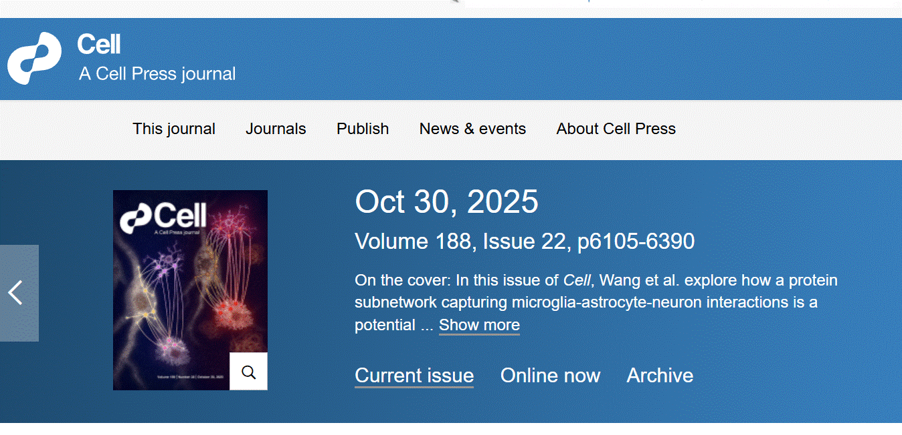
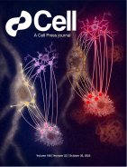
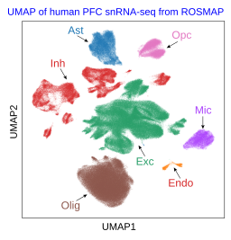
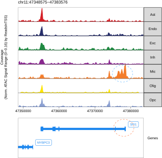
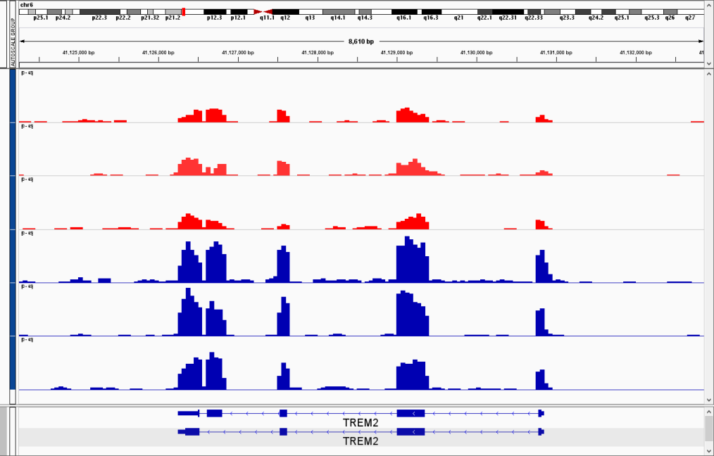

Dr. Erming Wang is an Assistant Professor in computational biology in the Department of Genetics and Genomics Science at the Icahn School of Medicine at Mount Sinai.. He received his PhD degree in Genetics from Chinese Academy of Sciences. He started his career in quantitative genetics and statistics, throughout years. He worked on genomics and functional genomics of various biological and medical systems and in recent years has focused on utilizing bioinformatics and system biology tools to unravel molecular mechanisms of human diseases, particularly, via the integration of omics data including whole genome sequencing, epi-genetic/epigenomic, transcriptomic, and proteomic data modalities at both bulk and single cell resolution. Dr. Wang has published more than twenty five corresponding or first-authorship original research papers in journals such as Cell (doi: 10.1016/j.cell.2025.08.038, and doi: 10.1016/j.cell.2026.02.026 ), Nature Biotechnology, and Nucleic Acids Research.


1. Wang, E.* , Yu, K.*, Cao, J.*, Wang, M., Katsel, P., Song, W., Wang, Z., Li, Y., Wang, X., Wang, Q., Xu, P., Yu, G., Zhu, L., Geng, J., Habibi, P., Qian, L., Tuck, T., Li, A., Julia, T.C.W., Roussos, P., Brennand, K. J., Haroutunian, V., Johnson, E.C.B., Seyfried, N.T., Levey, A.I., Bennett, D.A., Peng, J., Cai, D. & Zhang, B. (2025). Multiscale Proteomic Modeling Reveals Interacting Neuronal and Glial Protein Networks Driving Alzheimer's Disease Pathogenesis. Cell 188, 6186–6204 e6113. PMID: PMID41005309. doi: 10.1016/j.cell.2025.08.038. (* equal contribution)
2. Shrestha, H. K.*, Sun, H.*, Yarbro, J. M.*, Lee, D.*, Liu, D.*, Wang, E.*, McReynolds, M., Zhang, N., Xie, B., Yang, S., Yu, K., Poudel, S., Li, Y., Yuan, Z. F., Kong, D., Wang, M., Wang, Z., Niu, M., Wang, H., Zaman, M., Wang, J., Vanderwall, D. R., Sun, Y., Wu, Z., Chen, P. C., Bai, B., High, A. A., Faura, J., Liu, C., Bennett, D. A., Johnson, E. C. B., Seyfried, N. T., Levey, A. I., Haroutunian, V., Serrano, G. E., Beach, T. G., DeTure, M., Kanekiyo, T., Petersen, R. C., Bu, G., McLean, P. J., Dickson, D. W., Rademakers, R., Yu, G., Wang, X., Zhang, B., Peng, J. (2026). Pan-neurodegeneration proteomics reveals disease subtypes and molecular signatures. Cell 189, 3124–3143.e15. PMCID: PMC13014018. DOI: 10.1016/j.cell.2026.02.026. (* equal contribution)
3. Coleman, C.*, Wang, M.*, Wang, E.*, Micallef, C., Shao, Z., Vicari, J. M., Li, Y., Yu, K., Cai, D., Peng, J., Haroutunian, V., Fullard, J.F., Bendl, J., Zhang, B. & Roussos, P. (2023). Multi-omic atlas of the parahippocampal gyrus in Alzheimer's disease. Sci Data 10(1): 602. doi:10.1038/s41597-023-02507-2. (* equal contribution)
4. Wang, E*., Wang, M*., Guo, L., Fullard, J., Micallef, C., Bendl, J., Song, W., Ming, C., Huang, H., Li, Y., Yu, K., Peng, J., Bennett, D.A., De Jager, P.L., Roussos, P., Haroutunian, V. & Zhang, B. (2023). Genome-wide methylomic regulation of multiscale gene networks in Alzheimer's disease. Alzheimer's Dement. 2023; 1-24. doi: 10.1002/alz.12969.(* equal contribution)
5. Wang, E.*, Duarte, M.L.*, Rothman, E.L., Cai, D. & Zhang, B. (2022). Non-coding RNAs in Alzheimer's disease: perspectives from omics studies. Human Molecular Genetics, 31, R54–R61. doi: 10.1093/hmg/ddac202 (* equal contribution)
6. Kajiwara, Y.*, Wang, E.*, Wang, M., Sin, W.C., Brennand, K.J., Schadt, E., Naus, C.C., Buxbaum, J., & Zhang, B. (2018). GJA1 (connexin43) is a key regulator of Alzheimer's disease pathogenesis. Acta Neuropathol Commun. 6: 144. doi: 10.1186/s40478-018-0642-x. (* equal contribution)
7. Wang, E.#, Zhu, H., & Wang, X. (2017). Amylin treatment reduces neuroinflammation and ameliorates abnormal patterns of gene expression in the cerebral cortex of an Alzheimer's Disease mouse model. Journal of Alzheimer's Disease, 56, 47–61. (# co-corresponding author)
8. Wang, E.#, & Cambi F. (2012). microRNA expression in mouse oligodendrocytes and regulation of proteolipid protein gene expression. J Neurosci Res. 2012; 90(9): 1701–1712. doi:10.1002/jnr.23055. (# co-corresponding author)
9. Wang, E., Mueller, W., Hertel, K. & Cambi, F. (2011). G run-mediated recognition of proteolipid protein (PLP) and DM20 5' splice sites by U1small nuclear RNA is regulated by context and proximity to the splice site. Journal of Biological Chemistry, 286, 4059-4071.
10. Wang, E., Dimova, N. & Cambi, F. (2007). PLP/DM20 ratio is regulated by hnRNP H and F and a novel G-rich enhancer in oligodendrocytes. Nucleic Acids Research, 35, 4164-4178.
11. Wang, E.*, Wang, R.*, DeParasis, J., Loughrin, J.H., Gan, S. & Wagner, G.J. (2001). Suppression of a P450 hydroxylase gene in plant trichome glands enhances natural-product-based aphid resistance. Nature Biotechnology, 19(4), 371-374 (* equal contribution).
For the list of my biography, employment, education, and detailed publication, please find here: Connecting to ORCID
. Integration of multiomics data at both bulk and single-cell resolution to uncover molecular mechanism underlying human diseases
1. Alzheimer's disease in particular
2. Neurodegenerative diseases in general
. Regulatory roles of epi-genetics and epi-genomics in AD
1. Methylation at bulk level
2. ATAC at bulk and single cell resolution
. Molecular mechanism in cognitive resilience to AD
For proteomics data portal, please find here: DEPs, top AD modules, and top KDPs
1. UMAP of snRNA-seq derived from postmortem PFC tissue.

2. Integrative view of ATAC and mRNA expression around the SPI1 gene in the sn-multiome profiling derived from postmortem PFC tissue of the ROSMAP cohort.

3. TREM2 expression in bulk RNA-seq derived from postmortem PHG tissue of the MSBB cohort. Notes, blue and red tracks stand for AD and control, respectively.
